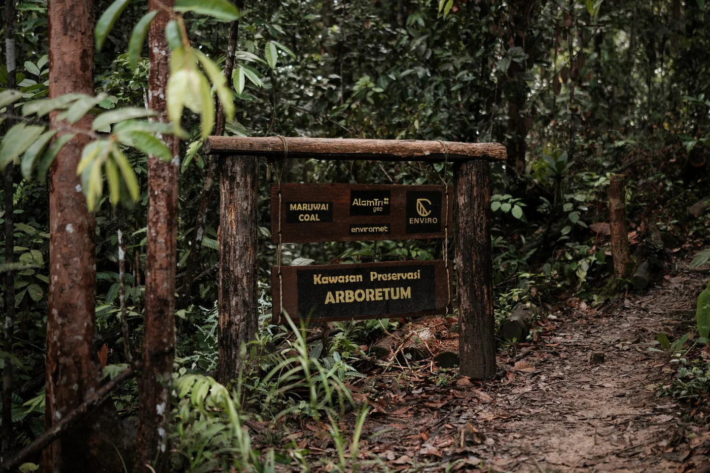

01 · KONSERVASI FLORA
Arboretum
Koleksi dan pelestarian tumbuhan lokal, sumber benih reklamasi, laboratorium lapangan, serta bank genetik untuk restorasi ekosistem.
- Plasma nutfah lokal
- Sumber benih
- Riset & edukasi